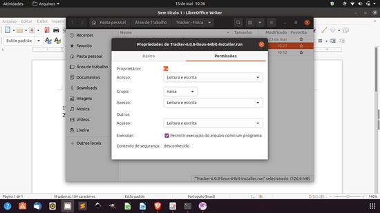
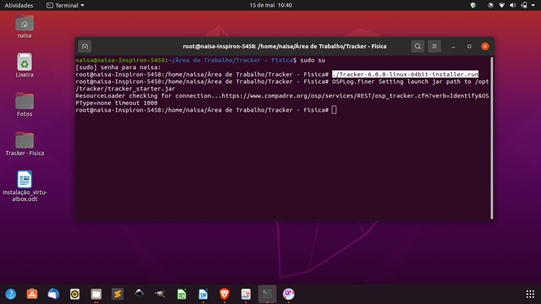

No site clique no link do Linux salve na pasta Documentos.
1º - Acessar as propriedades do arquivo de instalação clicando com o botão direito do mouse e marcar a opção:
Permitir a execução do arquivo como um programa.
2º - Marcar as outras opções como leitura e escrita
3º - Abra o terminal do Ubuntu (Ctrl+Alt+T) e entre como sudo su (super usuário)
Digite o seguinte comando: ./Tracker-6.0.8-linux-64bit-installer.run
Clique enter para prosseguir com a instalação.
Após a execução no terminal siga os passos na tela do software que será carregada para concluir.